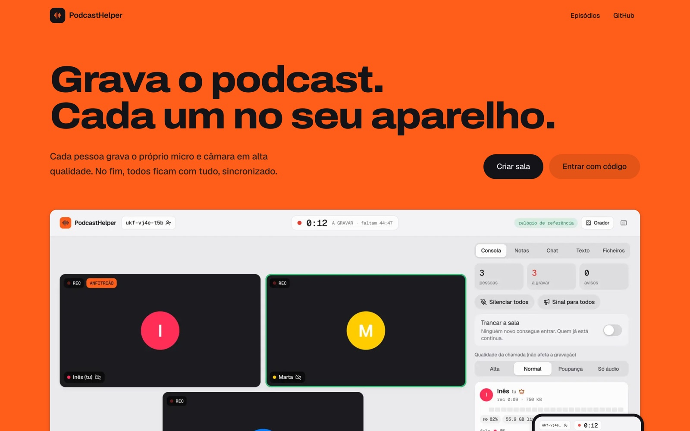
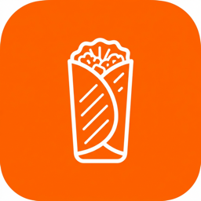
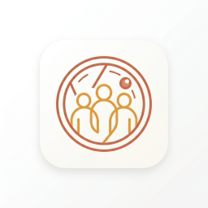
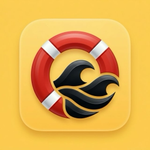
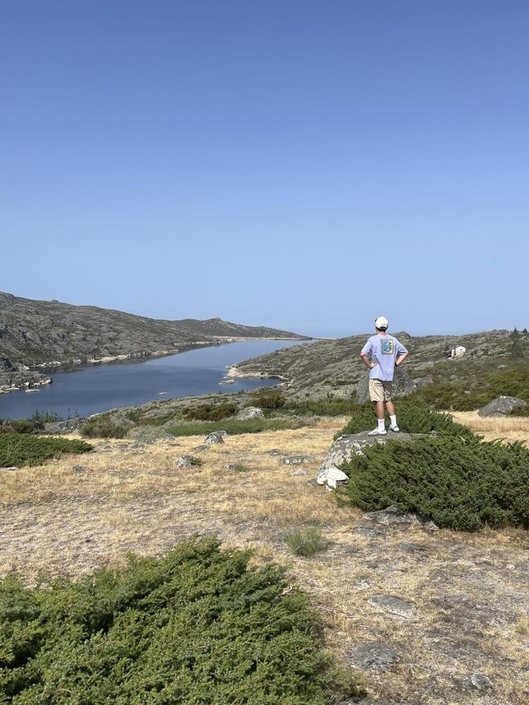

solarcalc · web · next.js, three.js
Solar savings for a Portuguese roof, in two minutes.
PVGIS irradiance data from the European Commission and real Portuguese tariffs feed a payback simulation, introduced by a 3D house you walk around.
// ios · full-stack · lisbon, pt
Native iOS in SwiftUI and full-stack web with Next.js and Supabase. I take products from the first sketch to the App Store and production.
lunar · ios, web, android · 2026
A student's whole school year in one app: today's classes, the timetable, tests and grades, and an assistant that explains and acts. Built solo for iPhone, web and Android on one Supabase backend.
01 · today
The Today screen follows the day: the class happening now, the next one, tests and homework coming up, and the study plan for the evening.
02 · timetable
Take a picture of the printed timetable. Lunar reads every slot and asks only about the one it cannot read.
03 · tests
Each test gets short sessions spread over the days before it, with a reminder the evening before.
04 · assistant
The assistant solves an exercise from a photo step by step, then gives the student a similar one to try alone.
solarcalc · web · next.js, three.js
PVGIS irradiance data from the European Commission and real Portuguese tariffs feed a payback simulation, introduced by a 3D house you walk around.
Ronda · 18 buracos
Oitavos Dunes
World Handicap System
Handicap
teeup · ios · swiftui, mapkit, weatherkit
Hole-by-hole scorecards, the World Handicap System, course discovery and rounds with friends. It works offline on the course and syncs when you are back in range.

podcast helper · web, android · webrtc
Guests join from a link and talk peer to peer. Each microphone and camera is recorded locally in sync, so a bad connection never ruins the take.

KebabLocatorFind the best kebab near you. Live on the App Store.swiftui · mapkit
GroupMemoShared memories, a bucket list and a live map for friend groups.swiftui · supabase
SGO SalvaMaisAn emergency safety workflow app, in TestFlight with real users.swiftui · xcode cloud
I started with iOS and grew into full-stack web. Every project here began with a problem I or someone close to me actually had, from finding a good kebab to getting through the school year.
Away from the editor I play golf, train at the gym and cook. TeeUp and KebabLocator are not a coincidence.